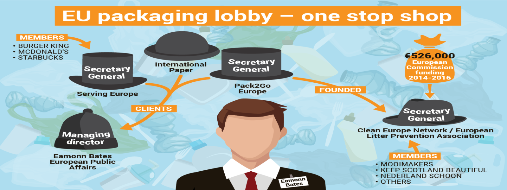

Edito
«
Nature en Hauts-de-France » est un ouvrage de
sensibilisation du grand public à la richesse du
patrimoine naturel régional. Conçu et édité par
l'Observatoire de la biodiversité des Hauts-de-France
(avec le concours financier de l'Union européenne
[FEDER], de la Région, de la DREAL, de l'Office français
de la biodiversité, et des deux Agences de l'eau
Artois-Picardie et Seine-Normandie), ce livre est le
fruit de deux années de travail. Il se divise en deux
parties.
Les 50 premières pages dressent un état des lieux de la
biodiversité, tout en mettant l'accent sur les
responsabilités de notre région dans la préservation de
certaines espèces. Les 150 suivantes, elles, font le
tour de 15 grands milieux naturels régionaux (dunes,
falaises et côtes rocheuses, estuaires, mer, grandes
cultures, rochers/éboulis/cavités, cours d'eau, vallées
alluviales, marais et tourbières alcalines, pelouses
calcicoles, landes, bocage, bois et forêts, terrils,
villes et villages). Des paragraphes thématiques
présentent des sites uniques, des êtres vivants
étonnants, des problématiques méconnues ou des enjeux
avérés. Des photographies « pleine page » invitent à
suivre les professionnels de l'environnement régional
sur le terrain, et des dessins illustrant des scènes de
vie plongent le lecteur au cœur des écosystèmes...


loi
sur le climat
-
Du 15 au 17 mars 2021, la commission spéciale s’est
penchée sur le chapitre trois de la loi Climat
concernant l’artificialisation des sols. Les députés écologistes dénoncent des dérogations en
pagaille et s’insurgent que le e-commerce soit épargné...


Le rapport parlementaire qui veut mettre les militants écologistes en prison
Une mission d’information parlementaire pilotée par Les Républicains et La République en marche demande de « renforcer l’arsenal pénal » contre « les militants antiglyphosate, véganes ou antichasse ». Les propositions pourraient être inscrites dans la loi, une perspective qui inquiète fortement les militants écologistes ou antispécistes....


Le but de cette déclaration est de changer le regard des hommes sur les arbres, qui ne sont pas de «simples objets», mais des «sujets de droit». Pour l'instant, cela reste toutefois une déclaration sans effets contraignants..

Charte
de l'environnement

Loi constitutionnelle n° 2005-205 du 1er mars 2005 relative à la Charte de l'environnement (JORF n°0051 du 2 mars 2005 page 3697)

Réquiem pour les enquêtes publiques


Les lobbies du plastique

Comment les lobbies des emballages se cachent derrière des associations anti-déchets pour éviter des solutions plus radicales...« Gestes propres » : quand les industriels du plastique culpabilisent les citoyens


Chère société industrielle...
Moi, je vivais loin des sociétés humaines, en harmonie avec mes hôtes qui n’ont jamais eu à se plaindre de ma présence. Et tu es arrivée...
 Leforest
environnement EDITOS
Leforest
environnement EDITOS